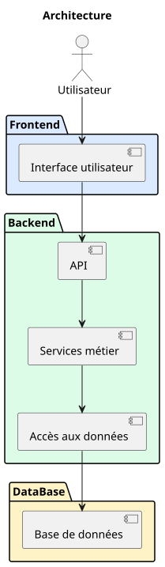

Spécifications techniques
Pour rappel l'équipe de développement:
- 2 développeurs Frontend
- 2 développeurs Backend
Formés aux technologies actuelles.
Le projet va être découpé en plusieurs couches:
Frontend
UI:
- Affiche l'interface utilisateur
- Permet de consulter, saisir et modifier les données autorisées
- Valide les données au niveau UI pour améliorer l'expérience utilisateur
- Soumet les requêtes HTTP à l'API
- Affiche les réponses de l'API
Solutions existantes:
- React :
- Bibliothèque UI.
- Impose de choisir d'autres composants et bibliothèques
- Conventions et structure de développement à la discrétion de l'équipe
- Ecosystème large
- Vue :
- Conventions et structure définies par le framework
- Ecosystème plus réduit que React
- Adapté aux petites et moyennes équipes
- Angular :
- Framework complet, avec cadre et structure strict
- Adapté a des projets d'entreprises
- Adapté aux moyennes équipes
- ...
Backend
API:
- Point d'entrée et de sortie du backend
- Reçoit les requêtes http de l'UI
- Vérifie l'authentification de l'utilisateur
- Traduit les requêtes HTTP en données métiers pour les services
- Transforme et valide la structure des données
- Dialogue avec les services métiers
- Traduit les réponses des services en réponses HTTP
- Renvoie les réponses http à l'UI
Services Métier:
- Reçoit les données de l'API
- Validation des données selon logique métier
- Applique la logique métier
- Dialogue avec les services d'accès aux données
- Renvoie les réponses métier
Service d'accès aux données:
- Reçoit les demandes métiers
- Dialogue avec la base de données
- Reçoit les données brutes
- Transforme les données brutes en données métier
- Renvoie les données aux services métiers
Solutions existantes :
- FastAPI :
- Orienté API
- Nécessite d'autres outils et bibliothèques, authentification, ORM, etc.
- Rapide
- Conventions et structure de développement à la discrétion de l'équipe
- Flask :
- Framework minimaliste
- Nécessite d'autres outils et bibliothèques, authentification, ORM, etc.
- Conventions et structure de développement à la discrétion de l'équipe
- Django :
- Framework complet avec authentification, ORM, etc.
- Interface admin
- Conventions et structure imposées
- Peut être configuré en API
Base de données
- Reçoit les demandes des services d'accès aux données
- Persiste les données
- Fournit les données
- Renvoie les données brutes
Solutions existantes:
- Oracle :
- SQLServeur :
- PostgreSQL :
- MySQL :
- MarioDB :
- ...
Solutions retenues
Frontend : Vue:
- Le projet est bien délimité, bien qu'évolutif, il n'a pas vocation à devenir un projet d'entreprise multisites.
L'équipe de développement étant de 2 personnes, pour limiter la dispersion dans les outils et bibliotèques, un ecosystème moins vaste facilite la structure du projet.
De plus le framework Vue encourage une logique de décomposition script/template/CSS, qui permet naturellement de bien séparer les responsabilités.
Backend : Django en API:
- Le projet peut démarrer rapidement et avec fiabilité avec la structure et les composants django.
Les points d'entrées sont exposés par l'API et le système d'authentification et l'ORM intégré permettent de se focaliser sur les besoins métier, plutôt que l'architecture globale.
L'interface administrateur intégrée permet également rapidement à un utilisateur admin du projet de modifier des données afin de répondre aux besoins utilisateurs.
Architecture générale

Séquence générique de traitement